So sánh CNN và Transformer
Yêu cầu
Mô tả
So sánh CNN và Transformer trên một tập dữ liệu ảnh lớn do nhóm tự chọn, với nhiều chế độ huấn luyện: from-scratch vs. pretrained; đóng băng backbone, đóng băng một phần, hoặc fine-tune toàn bộ.
Hai phần nộp
- 1Hoàn thành · 25-10-2026
A1.1 — Dataset + protocol
Hạn nộp · 26/10/2026, 23:59 GMT+7 · W8
Chọn tập dữ liệu; mô tả split và augmentation; liệt kê các mô hình CNN/Transformer sẽ dùng; lên kế hoạch from-scratch / pretrained / freeze. Chưa cần số liệu cuối.
- 2Hoàn thành · 09-11-2026
A1.2 — So sánh cuối
Hạn nộp · 09/11/2026, 23:59 GMT+7 · W10
Chạy đủ các thí nghiệm trong phần Yêu cầu kỹ thuật; có bảng và biểu đồ, phần thảo luận, và code tái lập được.
Yêu cầu kỹ thuật
Chạy và so sánh các cấu hình sau (có thể dùng pretrained từ timm / torchvision / Hugging Face):
- 1
Hai họ kiến trúc: ít nhất một CNN (ResNet, ConvNeXt, EfficientNet, …) và một Transformer (ViT, DeiT, Swin, …).
- 2
From-scratch vs. pretrained trên cùng split (ít nhất một họ; khuyến nghị cả hai).
- 3
Ba kiểu đóng băng (trên bản pretrained): freeze toàn bộ backbone (chỉ train head); freeze một phần (ví dụ vài block đầu); full fine-tune.
Báo cáo: bảng số liệu (accuracy / F1, thời gian, số tham số trainable) kèm nhận xét, ví dụ khi nào freeze có lợi, khi nào ViT cần pretrain.
Metric tối thiểu: accuracy trên validation/test, thêm confusion matrix hoặc phân tích lỗi.
Kết quả
Báo cáo A1
1. EDA / Dataset
Food-101
Food-101 là một dataset về hình ảnh của các món ăn chuyên dùng cho các bài toán nhận diện và phân loại (food image recognition), được giới thiệu lần đầu tiên vào năm 2014 bởi các nhà nghiên cứu tại Viện Công nghệ Liên bang Thụy Sĩ (ETH Zurich).
Các hình ảnh trong tập dữ liệu này được thu thập từ nền tảng mạng xã hội ẩm thực nổi tiếng lúc đó là Foodspotting.com. Vì là ảnh do người dùng thực tế chụp khi đi ăn uống, tập dữ liệu này có độ biến động rất cao về góc độ, ánh sáng và bối cảnh.
Bộ dữ liệu này bao gồm 101.000 hình ảnh về 101 loại món ăn phổ biến khác nhau từ bánh pizza, ramen, sushi, apple pie, gà rán,… tương đương với 101 lớp (hay nhãn) phân loại khác nhau. Với mỗi lớp có đúng 1.000 hình ảnh, trong đó:
- 750 ảnh cho tập train: được cố tình giữ nguyên "nhiễu" từ thực tế như sai nhãn, màu sắc quá đà, dính đạo cụ hoặc góc chụp không chuẩn,… để thử thách khả năng thích ứng của các mô hình.
- 250 ảnh cho tập test: được rà soát và làm sạch thủ công để đánh giá chính xác hiệu suất của mô hình.
Đồng thời, tập dữ liệu còn có một số đặc điểm:
- Toàn bộ là ảnh màu RGB nên số kênh
channels=3. - Kích thước ảnh thay đổi, cạnh dài tối đa là 512px, không cố định như 28×28 hoặc 32×32.
Do đó, Food-101 có thể được xem là một tập dữ liệu "đủ lớn" về nhiều khía cạnh: kích thước ảnh, độ phân giải, số lớp, số lượng ảnh, cũng như sự đa dạng và độ chi tiết của ảnh, đủ để ảnh hưởng đến quá trình huấn luyện, thời gian và kết quả đầu ra của các mô hình.
Split Dataset
Food-101 cân bằng giữa các lớp: mỗi lớp có 1.000 ảnh, chia thành 750 ảnh train và 250 ảnh test. Trong 750 ảnh train, tiếp tục chia thành training và validation theo tỉ lệ 8:2, tương ứng 600 ảnh training và 150 ảnh validation mỗi lớp.
| Tập | Số ảnh mỗi lớp | Tổng cộng | Mục đích |
|---|---|---|---|
| Training | 600 | 60.600 | Cập nhật gradient, học ra trọng số |
| Validation | 150 | 15.150 | Chọn siêu tham số, learning rate, checkpoint |
| Test | 250 | 25.250 | Đánh giá |
2. DataLoader & augmentation
DataLoader
Food-101 có kích thước khá lớn (khoảng ~5GB), không thể load hết một lần, nên dữ liệu được nạp theo từng batch 32 ảnh trong lúc train, validation và test. Luồng dữ liệu đi qua 4 tầng:
flowchart TD
A["food-101/images/*.jpg"]
B["split_manifest.csv"]
C["Food101Dataset"]
D["DataLoader"]
E["batch hiệu dụng 128"]
A -->|build manifest| B
B -->|make_datasets| C
C -->|build_transforms| D
D -->|train_one_epoch| E
Hình 1. Luồng dữ liệu sơ bộ trong pipeline
- Train: 60.600 / 32 = 1.893,75, nên một epoch có 1.894 batch, batch cuối chỉ có 24 ảnh.
- Gom 4 batch thành 1 step: 1.894 = 473 × 4 + 2, nên một epoch có 474 optimizer step.
- Nhóm cuối chỉ có 2 batch = 32 + 24 = 56 ảnh. Loss của nhóm này được chia cho 56, không chia cho 128.
- Val: 15.150 / 32 = 473,4375, tức là có 474 batch.
- Test: 25.250 ảnh, dùng batch 64 để chạy nhanh hơn; batch size không ảnh hưởng kết quả vì đây là pha suy luận.
Augmentation
| Train | Val/Test | |
|---|---|---|
| Không gian | RandomResizedCrop(224, scale=(0.8, 1.0), ratio=(3/4, 4/3)) + RandomHorizontalFlip(0.5) | Resize(256) (cạnh ngắn) → CenterCrop(224) |
| Nội suy | Bilinear + antialias | Bilinear + antialias |
| Chuẩn hoá | uint8 → [0, 1] → mean/std ImageNet | như train |
- Crop với scale từ 0.8 trở lên luôn giữ hơn 80% diện tích ảnh, nhờ vậy các cấu hình được so sánh công bằng: không cấu hình nào được lợi riêng từ augmentation.
- BatchNorm chỉ thấy 32 ảnh mỗi lần: gradient accumulation làm tăng batch hiệu dụng cho optimizer lên 128, nhưng thống kê BatchNorm vẫn tính trên từng batch 32.
3. Protocol thí nghiệm
| # | Mô hình | Khởi tạo | Freeze |
|---|---|---|---|
| 1 | ResNet-50 | scratch | full train |
| 2 | ResNet-50 | pretrained | full fine-tune |
| 3 | ViT-B/16 | pretrained | full fine-tune |
| 4 | ResNet-50 | pretrained | freeze backbone (head-only) |
| 5 | ResNet-50 | pretrained | freeze một phần |
So với kế hoạch Protocol ban đầu, danh sách cấu hình thực tế bỏ bớt 3 cấu hình của ViT-B/16: from-scratch, pretrained freeze một phần và pretrained freeze backbone.
| # | Cấu hình | Trọng số khởi tạo | Phần được train | Tham số train / tổng | LR head / backbone |
|---|---|---|---|---|---|
| 1 | ResNet scratch full | Ngẫu nhiên | Toàn bộ | 23,71M / 23,71M (100%) | 3e-4 / 3e-4 |
| 2 | ResNet pretrained full | IMAGENET1K_V1 (76,1% top-1) | Toàn bộ | 23,71M / 23,71M (100%) | 3e-4 / 3e-5 |
| 3 | ViT-B/16 pretrained full | IMAGENET1K_V1 (81,1%) | Toàn bộ | 85,88M / 85,88M (100%) | 3e-4 / 3e-5 |
| 4 | ResNet pretrained head | IMAGENET1K_V1 | Chỉ fc | 0,21M / 23,71M (0,9%) | 3e-4 / — |
| 5 | ResNet pretrained partial | IMAGENET1K_V1 | layer4 + fc | 15,17M / 23,71M (64%) | 3e-4 / 3e-5 |
4. Kết quả thực nghiệm
| Epoch | ResNet Scratch | ResNet full | ResNet Head | ResNet Partial | ViT full |
|---|---|---|---|---|---|
| 1 | 0,076 | 0,614 | 0,477 | 0,595 | 0,676 |
| 2 | 0,156 | 0,714 | 0,555 | 0,687 | 0,756 |
| 3 | 0,217 | 0,742 | 0,571 | 0,721 | 0,782 |
| 5 | 0,372 | 0,767 | 0,594 | 0,738 | 0,797 |
| 7 | 0,462 | 0,777 | 0,602 | 0,746 | 0,805 |
| 9 | 0,517 | 0,7775* | 0,606* | 0,750* | 0,809* |
| 10 | 0,521* | 0,777 | 0,606 | 0,750 | 0,808 |
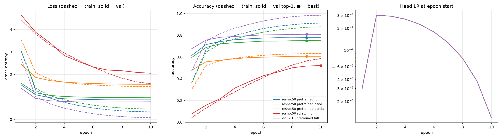
- Pipeline huấn luyện chạy đúng: learning rate đầu mỗi epoch đúng như thiết kế: epoch 1 bắt đầu ở 3e-5, epoch 2 lên 3e-4, sau đó giảm dần theo cosine về 1,2e-5 ở đầu epoch 10.
- Các cấu hình pretrained: phần lớn mức tăng diễn ra trong 3–4 epoch đầu; từ epoch 7 trở đi, val chỉ tăng ≤ 0,3 điểm. Do đó, train 10 epoch được xem là đủ.
| Cấu hình | Train acc | Val top-1 | Gap |
|---|---|---|---|
| ResNet scratch | 0,585 | 0,521 | 6,4 |
| ResNet pretrained full | 0,913 | 0,777 | 13,6 |
| ResNet freeze backbone | 0,632 | 0,606 | 2,6 |
| ResNet freeze partial | 0,877 | 0,750 | 12,7 |
| ViT pretrained full | 0,984 | 0,808 | 17,6 |
- ViT pretrained full fine-tune gần như thuộc lòng tập train: val loss chạm đáy ở epoch 7 rồi tăng lại, trong khi val top-1 vẫn đi ngang.
- ResNet freeze partial và ResNet pretrained full overfit vừa phải.
- ResNet freeze backbone bị underfit: chỉ có phần head được học nên năng lực mô hình có giới hạn.
- ResNet from-scratch có thể chưa học hết dữ liệu do chỉ có 10 epoch.
| Cấu hình | Train/epoch thực tế | Ước tính | Val/epoch |
|---|---|---|---|
| Head | ~420 s (7,0 phút) | 8,05 phút | ~105 s |
| Partial | ~547 s (9,1 phút) | 10,2 phút | ~105 s |
| ResNet full | ~1.280 s (21,3 phút) | 22,5 phút | ~105 s |
| ViT full | ~2.975 s (49,6 phút) | 50,1 phút | ~205 s |
| Scratch | ~1.305 s | 22,5 phút | ~106 s |
Tổng thực tế 19,98 h; ước tính 20,6 h; sai số khoảng 3%.
| Cấu hình | Tham số train | Val top-1 | Test top-1 | Test top-5 | Macro-F1 | Train (h) | Bộ nhớ (MB) |
|---|---|---|---|---|---|---|---|
| ViT-B/16 pretrained full | 85,88M | 0,809 | 0,859 | 0,969 | 0,859 | 8,26 | 7.645 |
| ResNet-50 pretrained full | 23,71M | 0,778 | 0,828 | 0,961 | 0,828 | 3,55 | 7.415 |
| ResNet-50 pretrained partial | 15,17M | 0,750 | 0,802 | 0,952 | 0,801 | 1,52 | 2.228 |
| ResNet-50 pretrained head | 0,21M | 0,606 | 0,655 | 0,884 | 0,652 | 1,17 | 1.203 |
| ResNet-50 scratch full | 23,71M | 0,521 | 0,577 | 0,833 | 0,573 | 3,66 | 7.418 |
- ViT-B/16 tốt hơn ResNet-50 (cùng pretrained full), nhưng tốn hơn 2,3 lần thời gian train và có hơn 3,6 lần tham số.
- Pretrained full tốn hơn 2,3 lần thời gian so với freeze một phần do train thêm layer1–layer3, nhưng chỉ thêm khoảng 2,7 điểm.
- Test top-1 cao hơn val top-1 khoảng 5 điểm ở mọi cấu hình, có thể do cách xây dựng dataset: tập test được làm sạch thủ công, còn tập train (và tập val tách ra từ đó) vẫn còn nhiễu.
| Cặp so sánh | Cả hai đúng | Chỉ bên trái đúng | Chỉ bên phải đúng | Cả hai sai |
|---|---|---|---|---|
| ResNet full vs ViT full | 19.650 | 1.265 | 2.046 | 2.289 |
| Scratch vs pretrained full | 13.846 | 732 | 7.069 | 3.603 |
| Head vs full | 15.816 | 730 | 5.099 | 3.605 |
| Partial vs full | 19.392 | 846 | 1.523 | 3.489 |
- ResNet đúng ở 1.265 ảnh mà ViT sai.
- Khoảng 2.289 ảnh (9%) cả hai mô hình đều sai, trong đó 1.105 ảnh chúng đoán cùng một lớp sai; các ảnh này nhiều khả năng mơ hồ thật hoặc bị gán nhãn sai.
Dựa vào confusion matrix (Hình 3) và phân tích lỗi:
- Các lớp khó giống nhau ở mọi cấu hình:
steak,pork_chop,apple_pie,filet_mignon,huevos_rancheros,ravioli,foie_gras. Cấu hình tốt nhất cũng chỉ đạt khoảng 55–68% ở các lớp này. - Các lớp dễ:
edamame(99,6–100% với các cấu hình pretrained),macarons,hot_and_sour_soup,pad_thai: những món có hình dạng hoặc màu sắc rất đặc trưng. - Các cặp bị nhầm nhiều nhất xoay quanh nhóm thịt đỏ:
steak↔filet_mignon(12–17% mỗi chiều);prime_rib→steak,pork_chop→steak; ngoài ratuna_tartare↔beef_tartare,chocolate_cake↔chocolate_mousse,apple_pie↔bread_pudding.
5. Thảo luận
Các số liệu và kết quả trên chỉ phản ánh thiết lập của thí nghiệm này, không phải kết quả chung cho mọi thiết lập (Bảng 10).
| Thiết lập | Giá trị |
|---|---|
| Loss | Cross-entropy |
| Optimizer | AdamW (0.9, 0.999), eps 1e-8 |
| Weight decay | 0.01 cho ma trận/kernel; 0 cho bias, tham số norm, pos-emb, CLS |
| Batch | 32 × 4 = 128 |
| Số epoch | 10 (474 step/epoch → 4.740 step) |
| Lịch LR | Warmup 474 step (0,1× → 1×), sau đó cosine (→ 0,01×) |
| Gradient clipping | 1.0 |
| Precision | FP16 autocast + GradScaler |
| Seed | 1 seed = 42 |
| Thiết bị | Apple M4, MPS |
Chỉ có 1 seed nên không có mean ± SD. ResNet from-scratch chưa hội tụ, có thể do số epoch huấn luyện không đủ, làm khoảng cách giữa from-scratch và pretrained trở nên xa hơn.
Nhờ đo pilot trước khi chạy thực tế, số cấu hình được rút từ 12 xuống 8, rồi xuống 5; thời gian ước lượng giảm từ khoảng 50 ngày xuống còn khoảng 20,6 giờ cho 5 cấu hình × 10 epoch.
Về kết quả: khi dữ liệu ít, pretraining quan trọng hơn kiến trúc, và phần được fine-tune quan trọng hơn số tham số được train. Partial đạt 97% kết quả của full với 43% thời gian, vì layer4 chứa đặc trưng ngữ nghĩa cấp cao, phần cần thích nghi với ảnh món ăn nhất. Ngược lại, head-only thiếu 14,6 điểm: đặc trưng ImageNet không đủ tách biệt các món ăn.
Phần lớn lỗi nằm ở dữ liệu, không ở mô hình. Val nhiễu nhưng vẫn xếp hạng đúng.
Để tăng độ tin cậy của kết luận, có thể thêm 2 seed cho các cấu hình full fine-tune để có mean ± SD và kiểm chứng chênh lệch giữa ViT và ResNet; đồng thời tăng số epoch của ResNet from-scratch lên 30–50 (khoảng 12–20 giờ train) để quan sát điểm hội tụ.
Phụ lục
Confusion matrix
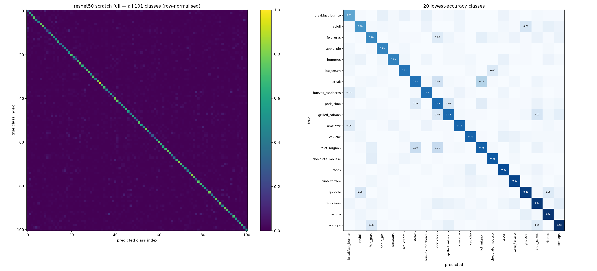
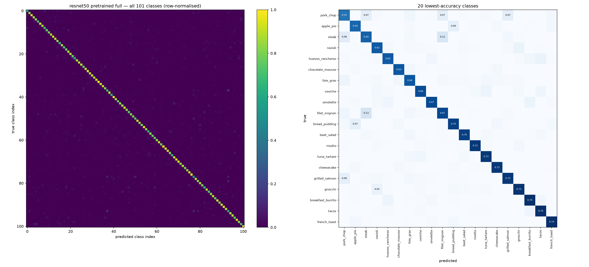
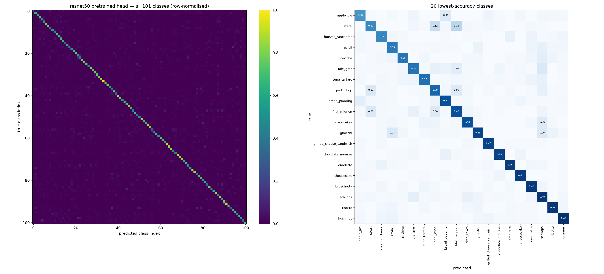
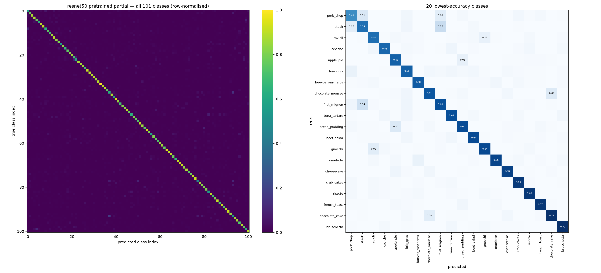
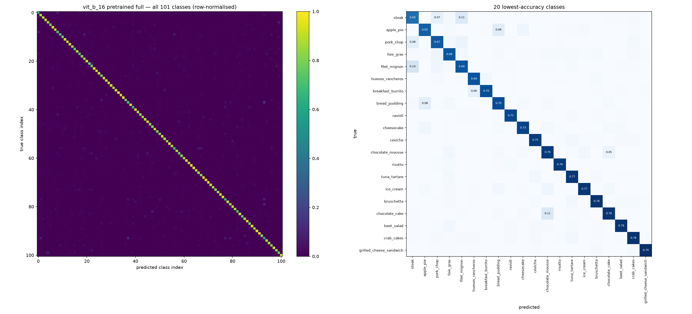
Hình 3. Các confusion matrix của các mô hình
Các lỗi tự tin nhất
Mỗi hình gồm 16 ảnh test bị đoán sai với độ tự tin cao nhất (nhãn đúng, nhãn dự đoán và xác suất).
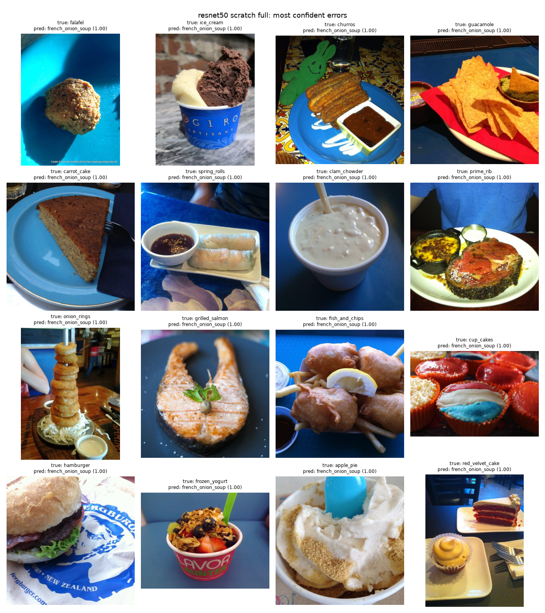
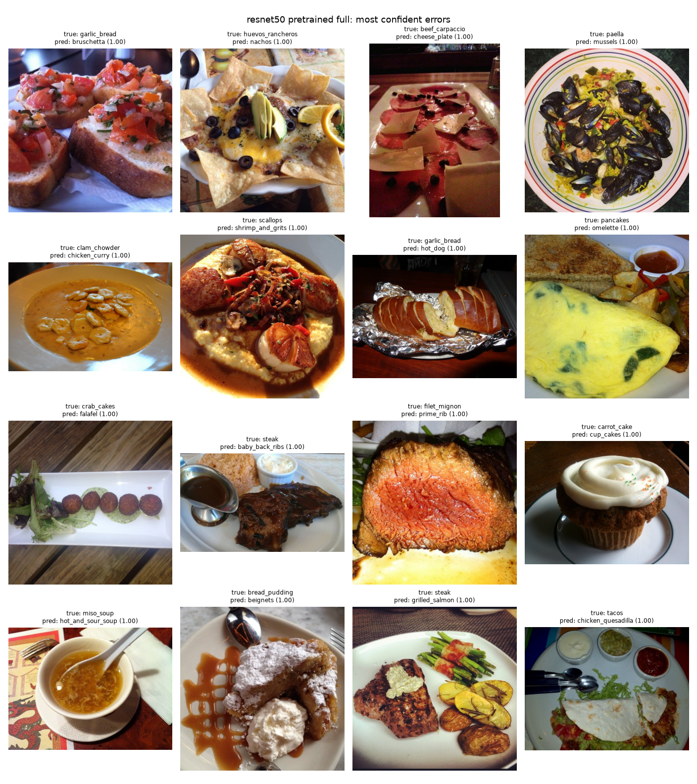
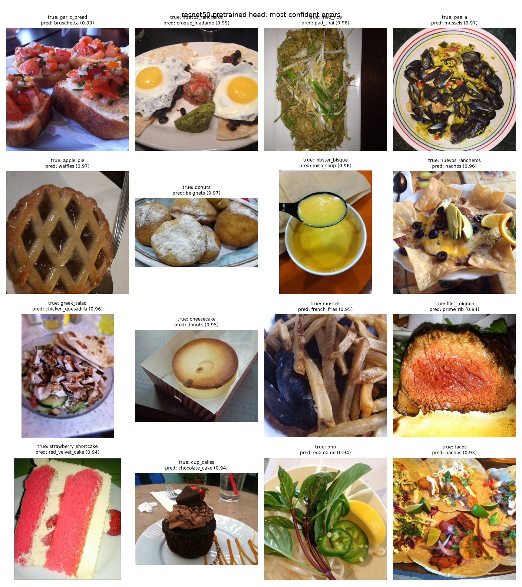
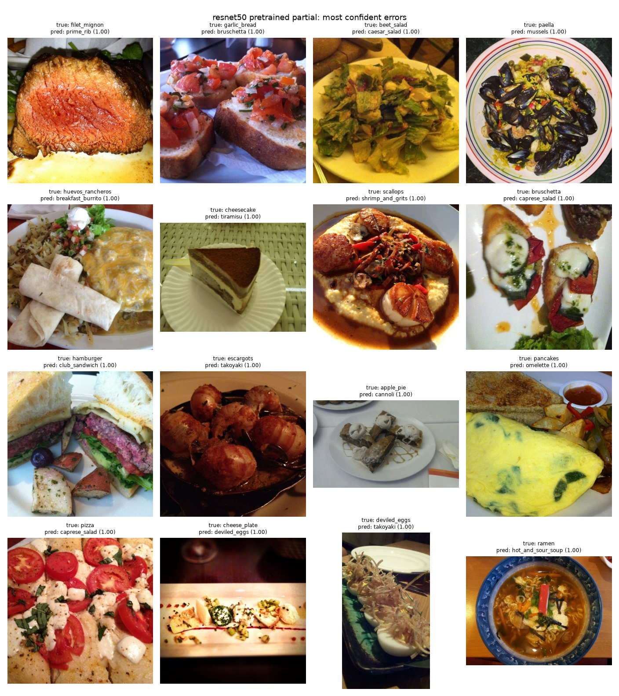
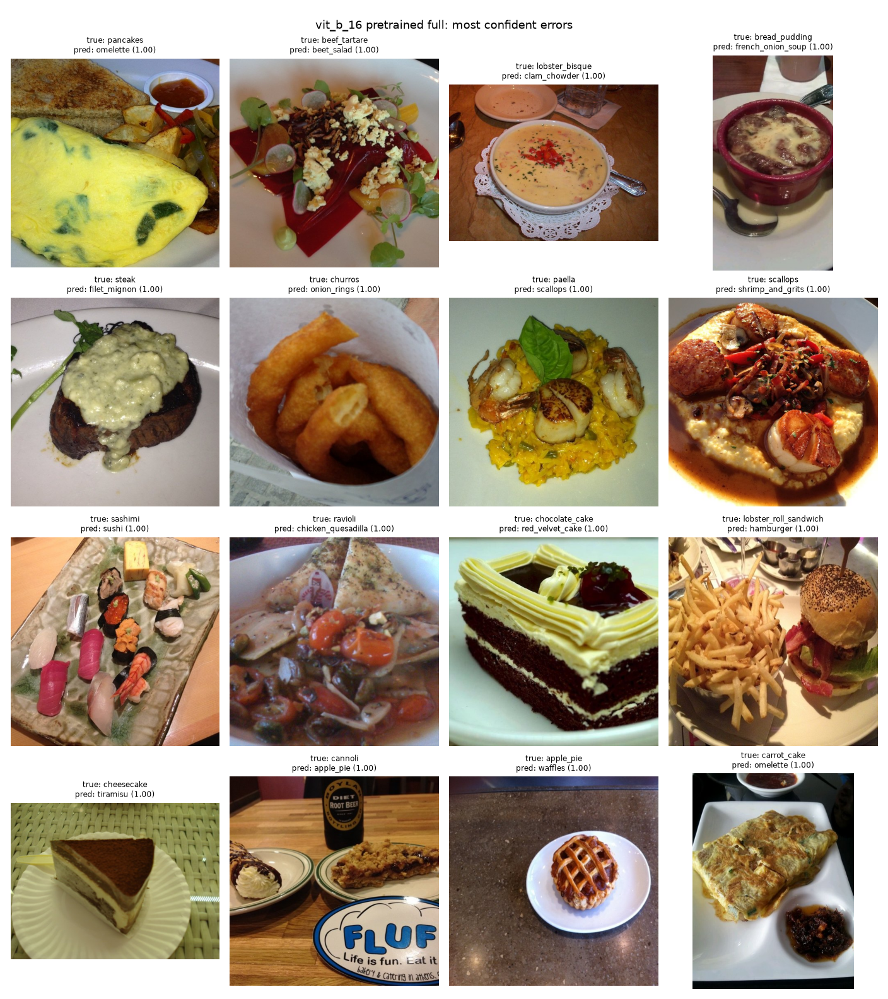
Hình 4. Các ảnh bị đoán sai với độ tự tin cao nhất của từng mô hình
Accuracy theo từng lớp
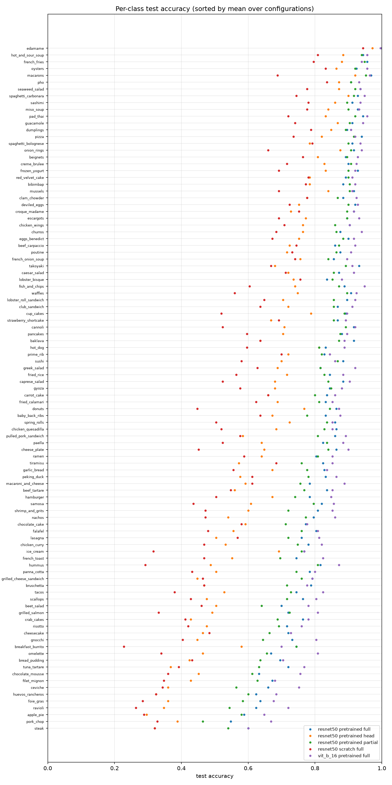